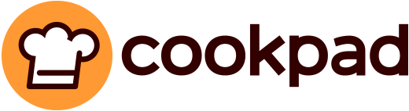

Lo más buscado

Sobre Cookpad
En Cookpad, nuestra misión es hacer que la cocina diaria sea algo divertido. Creemos firmemente que cocinar es la clave para que todos tengamos una vida más sana y más feliz y un planeta más cuidado. Ofrecemos a todos los que cocináis en casa cada día, y desde cualquier lugar del mundo, un espacio en el que nos ayudamos mutuamente, compartiendo recetas y trucos de cocina.
Cookpad en el mundo
🇺🇸 United States 🇬🇧 United Kingdom 🇪🇸 España 🇦🇷 Argentina 🇺🇾 Uruguay 🇲🇽 México 🇨🇱 Chile 🇻🇳 Việt Nam 🇹🇭 ไทย 🇮🇩 Indonesia 🇫🇷 France 🇸🇦 السعودية 🇹🇼 臺灣 🇮🇹 Italia 🇮🇷 ایران 🇮🇳 India 🇭🇺 Magyarország 🇳🇬 Nigeria 🇬🇷 Ελλάδα 🇲🇾 Malaysia 🇵🇹 Portugal 🇺🇦 Україна 🇯🇵 日本
Para saber más
Descarga nuestra app
Descubre recetas, guarda tus favoritas y comparte tus propias creaciones con la comunidad de Cookpad.